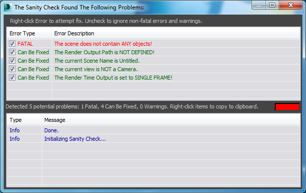
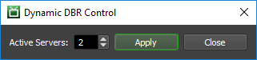

3ds Command¶
Note
As of Deadline 10, Autodesk’s Backburner is no longer required to be installed with 3ds Max to allow Deadline to control network rendering of 3ds Max.
Job Submission¶
You can submit jobs from within 3ds Max by installing the integrated submission script, or you can submit them from the Monitor. The instructions for installing the integrated submission script can be found further down this page.
Once installed, you can submit from within 3ds Max, by selecting Deadline → Submit Max To Deadline (3dsCmd) from the 3ds Max menu bar.
Submission Options¶
The general Deadline options are explained in the Job Submission documentation, and the Draft/Integration options are explained in the Draft and Integration documentation. The 3ds Command specific options are:
- Force Build
You can force 32 bit or 64 bit rendering.
- Apply VideoPost To Scene
Whether or not to use VideoPost during rendering.
- Continue On Error
Enable to have the 3ds command line renderer ignore errors during rendering.
- Enable Local Rendering
If enabled, the frames will be rendered locally, and then copied to their final network location.
- Gamma Correction
Enable to apply gamma correction during rendering.
- Split Rendering
Enable split rendering. Specify the number of strips to split the frame into, as well as the overlap you want to use.
- V-Ray/Mental Ray DBR
Enable this option to offload a V-Ray or Mental Ray DBR render to Deadline. See the V-Ray/Mental Ray DBR section for more information.
- Run Sanity Check On Submission
Check for scene problems during submission. See the Sanity Check section for more information.
- Camera
The camera to render with (if blank then the camera will be determined by the scene).
- Path Config
Allows you to specify an alternate path file in the MXP format that the Workers can use to find bitmaps that are not found on the primary map paths.
- Render Preset File
Uses a render preset settings file where <filename> is the name of the preset file.
- Pre Render Script File
Uses a pre-render script where <filename> is the name of the maxscript (
*.ms) file.- Post Render Script File
Uses a post-render script where <filename> is the name of the maxscript (
*.ms) file.- Scene State
Loads the specified scene state in the 3ds Max scene file before rendering the image.
- Batch Render (ALL Views)
Renders all enabled tasks in the Batch Render dialog.
- Batch Render Name
Renders batch renders in the 3ds Max scene file named batch-render-name.
- Remove Padding (Still-Frame)
Indicates that this is a still-frame render; no frame suffix will be added.
- Image Sequence File Creation
Note
Only available when more than one frame is specified in the frame list
Dictate to 3ds Max whether to create image sequence files and if so, what type. Possible options include:
Option
Description
noneDo not create any image sequence file
.imsqCreate a
.imsqimage sequence file.iflCreate a
.iflimage sequence file- Use Design Edition
Determines which version of the Max executable should be used.
GPU Affinity¶
If you are GPU rendering, there are additional GPU affinity override options:
Warning
Ensure you only use one of these settings at any one time! You can’t combine the Worker centric GPU Affinity with the GPUs Per Task or Select GPU Devices setting below.
GPUs Per Task: If set to 0 (the default), then the GPU renderer will be responsible for automatically choosing the GPUs used during rendering.
If this is set to 1 or greater, then each task for the job will be assigned specific GPUs. This can be used in combination with concurrent tasks to get a distribution over the GPUs. For example:
if this is set to 1, then tasks rendered by the Workers thread 0 would use GPU 0, thread 1 would use GPU 1, etc.
if this is set to 2, then tasks rendered by the Workers thread 0 would use GPUs {0,1}, thread 1 would use GPUs {2,3}, etc.
Select GPU Devices: A comma separated list of specific GPU device ID(s) can be entered instead of using the above ‘GPUs Per Task’ option (which must be set to “0”). Valid examples include: “0” or “1” or “0,1” or “2,4” without the quotation marks. Note: “Concurrent Tasks” must be set to “1” only.
Render Options¶
These additional options are exposed in the Monitor submission UI only or in the case of the integrated 3dsCmd submitter, the equivalent current scene settings are respected at submission time:
- Override Resolution (Leave unchecked to respect scene’s resolution settings)
Enable to override render resolution.
- Show Rendered Frame Window / Show Virtual Frame Buffer
Controls whether to display the rendered frame window (a.k.a. virtual frame buffer) during rendering.
- Skip Rendered Frames
Whether to skip frames where a corresponding output image file already exists.
- Perform Color Check
Toggle video Color Check.
- Force Two-Sided
Toggle force 2 sided.
- Render Hidden Objects
Toggle render hidden.
- Use Atmospherics Effects
Toggle atmospherics.
- Use Super Black
Toggle super black.
- Render To Fields
Toggle render to fields.
- Field Order
Toggles Field Order.
- Output Render Elements
Output render elements. Must be explicitly enabled for 3ds Max 2013 or earlier to create render elements.
- Perform Displacement Mapping
Toggle displacement mapping.
- Perform Render Effects
Toggle render effects.
- Convert Area Lights To Point Sources
Toggle area lights/shadows.
- Use Advanced Lighting
Toggles use advanced lighting.
- Compute Advanced Lighting
Toggles compute advanced lighting.
- Toggles Output Dithering (paletted)
Toggles Output Dithering (paletted).
- Toggles Output Dithering (true-color)
Toggles Output Dithering (true-color).
Bitmap Options¶
These additional Bitmap Parameters are exposed in the Monitor submission UI only or in the case of the integrated 3dsCmd submitter, the equivalent current scene settings are respected at submission time:
Override BMP_TYPE: Sets the type of BMP file being rendered. “2”=paletted, “8”=true 24-bit.
JPEG Options:
Override JPEG_QUALITY: Sets the JPG quality value. Ranges from 1 to 100.
Override JPEG_SMOOTHING: Sets the JPG smoothing value. Ranges from 1 to 100.
TARGA Options:
Override TARGA_COLORDEPTH: Sets the color depth for TGA files.
Override TARGA_COMPRESSED: Toggles TGA Compression. “1”=On, “0”=Off.
Override TARGA_ALPHASPLIT: Toggles TGA Alpha Split. “1”=On, “0”=Off.
Override TARGA_PREMULTALPHA: Toggles TGA Pre-Multiplied Alpha. “1”=On, “0”=Off.
TIF Options:
Override TIF_TYPE: Sets the TIF type. “0”=mono, “1”=color, “2”=logl, “3”=logluv, “4”=16-bit color.
Override TIF_ALPHA: Toggles TIF file alpha. “1”=On, “0”=Off.
Override TIF_COMPRESSION: Toggles TIF Compression. “1”=On, “0”=Off.
Override TIF_DPI: Sets the dots-per-inch value for TIF files.
For each of the following RLA_xxxx switches, there is a corresponding RPF_xxxx option.
Override RLA_COLORDEPTH: Sets the RLA color bitdepth.
Override RLA_ALPHA: Toggles RLA Alpha. “1”=On, “0”=Off.
Override RLA_PREMULTALPHA: Toggles RLA Premultiplied Alpha. “1”=On, “0”=Off.
Override RLA_DESCRIPTION: Lets you specify an RLA description (in quotes).
Override RLA_AUTHOR: Lets you specify an RLA author name (in quotes).
Override RLA_ZDEPTHCHANNEL: Toggles RLA Z-Depth Channel. “1”=On, “0”=Off.
Override RLA_MTLIDCHANNEL: Toggles RLA Material ID Channel. “1”=On, “0”=Off.
Override RLA_OBJECTIDCHANNEL: Toggles RLA Object Channel. “1”=On, “0”=Off.
Override RLA_UVCHANNEL: Toggles RLA UV Coordinates Channel. “1”=On, “0”=Off.
Override RLA_NORMALCHANNEL: Toggles RLA Surface Normals Channel. “1”=On, “0”=Off.
Override RLA_NONCLAMPEDCOLORCHANNEL: Toggles RLA Non-Clamped Color Channel. “1”=On, “0”=Off.
Override RLA_COVERAGECHANNEL: Toggles RLA Coverage Channel. “1”=On, “0”=Off.
The following RPF_xxxx switches do not have corresponding RLA_xxxx options.
Override RPF_NODERENDERIDCHANNEL: Turns on RPF Node Render ID Channel.
Override RPF_COLORCHANNEL: Turns on RPF Color Channel.
Override RPF_TRANSPCHANNEL: Turns on RPF Transparency Channel.
Override RPF_VELOCCHANNEL: Turns on RPF Velocity Channel.
Override RPF_WEIGHTCHANNEL: Turns on RPF Sub-Pixel Weight Channel.
Override RPF_MASKCHANNEL: Turns on RPF Sub-Pixel Mask Channel.
EXR Options:
Override EXR_USEEXPONENT: EXR use exponent on/off.
Override EXR_EXPONENT: EXR exponent value (decimal).
Override EXR_PREMULTALPHA: EXR premultiplied alpha on/off.
Override EXR_ALPHA: EXR save alpha component on/off.
Override EXR_RED: EXR save red component on/off.
Override EXR_GREEN: EXR save green component on/off.
Override EXR_BLUE: EXR save blue component on/off.
Override EXR_BITDEPTH: EXR bit depth: 0=8-bit integers; 1=half float; 2=float.
Override EXR_USEFRAMENUMDIGITS: EXR use number of frame digits on/off.
Override EXR_FRAMENUMDIGITS: EXR number of frame digits (integer).
Override EXR_COMPRESSIONTYPE: EXR compression type: 0=no compression; 1=RLE; 2=ZIP (1 scanline); 3=ZIP (16 scanlines); 4=PIZ.
Override EXR_USEREALPIX: EXR use RealPix RGB data on/off.
Pipeline Tools¶
When using the integrated submitter to submit through 3dsCmd you have the ability to use any of the event plugins that you have enabled through the Deadline Monitor. This is done by opening the Pipeline Tools window via the Pipeline Tools button. This window is explained further in the Pipeline Tools documentation.
Sanity Check¶
The 3ds Command Sanity Check script defines a set of functions to be called to ensure that the scene submission does not contain typical errors like wrong render view and frame range settings, incorrect output path, etc.
The Sanity Check is enabled by the Run Sanity Check Automatically Before Submission checkbox in the User Options group of controls in the Submit To Deadline (3dsmaxCmd) dialog. You can also run the Sanity Check manually by clicking the Run Now! button.
The dialog contains the following elements:
The upper area (Error Report) lists the problems found in the current scene.
The lower area (Feedback Messages) lists the actions the Sanity Check performs and gives feedback to the user. The latest message is always on top.
Between the two areas, there is a summary text line listing the total number of errors and a color indicator of the current Sanity Check state. When red, the Sanity Check will not allow a job submission to be performed.
The Error Report
The left column of the Error Report displays a checkbox and the type of the error. The checkbox determines whether the error will be taken into account by the final result of the check. Currently, there are 3 types of errors:
FATAL: The error cannot be fixed automatically and requires manual changes to the scene itself. A job submission with such error would be pointless. The state of the checkbox is ignored and assumed always checked.
Can Be Fixed: The error can be fixed automatically or manually. If the checkbox is active, the error contributes to the final result. If unchecked, the error is ignored and handled as a warning.
Warning: The problem might not require fixing, but could be of importance to the user. It is not taken into account by the final result (the state of the checkbox is ignored and assumed always unchecked).
Repairing Errors
Right-clicking an Error Message in the Error Report window will cause an associated repair function to be executed and/or a Report Message to be output in the Feedback Messages window. This difference was caused by the switch to DotNet controls which handle double-clicks as checked events, changing the checkbox state in front of the error instead.
Updating the Error Report
You can rerun/update the Sanity Check in one of the following ways:
Clicking the dialog anywhere outside of the two message areas will rerun the Sanity Check and update all messages.
Double-clicking any Message in the Feedback Messages window will rerun the Sanity Check and update all messages.
Repairing an error by double-clicking will also automatically rerun the Sanity Check
Pressing the Run Now! button in the Submit To Deadline dialog will update the Sanity Check.
The following Sanity Checks are FATAL. These are errors that must be fixed manually before the job can be submitted.
Message |
Description |
Fix |
|---|---|---|
The scene does not contain ANY objects! |
The scene is empty and should not be sent to Deadline. |
Load a valid scene or create/ merge objects, then try again. |
Maxwell is the renderer and the current view is NOT a Camera. |
Maxwell renderer must render through an actual camera and will fail through a viewport. |
Double-click the error message to open a Select By Name dialog to pick a camera for the current viewport. |
The scene contains objects or groups with the same name as a camera! |
The scene contains objects or groups with a duplicate name to a camera which could result in an incorrect object being used as the camera. |
Ensure you remove any duplicate named objects from your scene. |
‘Select GPU Devices’ syntax is invalid! Trailing ‘commas’ if present, should be removed. |
Trailing ‘commas’ should be removed. Valid Examples: 0 or 2 or 0,1,2 or 0,3,4 etc. |
Ensure GPU syntax is valid as entered in the ‘Select GPU Devices’ text field. |
If using ‘Select GPU Devices’, then ‘Concurrent Tasks’ must be set to 1! |
Due to Task to GPU device ID mapping, ensure Concurrent Tasks is set to 1 if using ‘Select GPU Devices’ option. |
Double-click the error message to set Concurrent Tasks to 1. |
At least one camera name has whitespace, newline, or tab at start/end of camera name. |
One or more cameras in the scene have ‘bad’ characters at the start or end of the camera name which will cause the camera to be ‘undefined’ at render time. |
Double-click the error message to trim any bad characters from each identified camera. |
The following Sanity Checks can be automatically fixed before the job is submitted.
Message |
Description |
Fix |
|---|---|---|
The current Scene Name is Untitled. |
The scene has never been saved to a MAX file. While it is possible to submit an untitled scene to Deadline, it is not a good practice. |
Double-click the error message to open a Save As dialog and save to disk. |
The current view is NOT a camera. |
The active viewport is not a camera viewport. |
Double-click the error message to open a Select By Name dialog to pick a camera for the current viewport. |
The Render Time Output is set to SINGLE FRAME! |
While it is ok to send a single frame to Deadline, users are sending animations 99% of the cases. |
Double-click the error message to set the Render Time Output to “Active Time Segment:. The Render Dialog will open so you can check the options and set to Range or Frames instead. |
The Render Output Path appears to point at a LOCAL DRIVE! |
While it is technically possible to save locally on each Worker, this is a bad idea - all Workers should write their output to a central location on the network. Currently, disks C:, D: and E: are considered local and will be tested against the output path. |
Double-click the error message to open the Render Dialog and select a valid path, then double-click again to retest. |
The Render Output File Name ends with a DIGIT - trailing numbers might fail. |
The Name to be saved to ends with one, two or three digits. Rendering to this file name will append 4 more digits and make loading sequential files in other applications hard or impossible. This check is performed only when the type is not AVI or MOV and will ignore 4 trailing digits which will be replaced by 3dsmax correctly when rendering to sequential files. |
Double-click the error message to add an underscore _ to the end of the file name, for example z:\temp\test123.tga will be changed to z:\temp\test123_.tga |
The Render Output will not be saved to a file. |
No renders will be saved as Render Scene Dialog checkbox is currently disabled. |
Double-click the error message to open the Render Dialog and to enable the Save File checkbox. |
The Distributed Rendering option is enabled for this renderer. |
Check if Distributed Rendering is enabled for MR or V-Ray renderer. |
Double-click the error message to disable Distributed rendering. |
The following Sanity Checks are simply warnings.
Message |
Description |
Fix |
|---|---|---|
The Render Output Path is NOT DEFINED! |
No frames will be saved to disk. This is allowed if you want to output render elements only. |
Double-click the error message to open the Render Dialog and select a valid path, then double-click again to retest. |
The Render Output is set to a MOVIE format. |
The file extension is set to an AVI or MOV format. In the current version of Deadline, this would result in a sequence of single frame MOV files rendered by separate Workers. In the future, the behaviour might be changed to render a single MOV or AVI file on a single Worker as one Task. |
Double-click the error message to open the Render Dialog and select a single frame output format, then double-click again to retest. |
This list will be extended to include future checks and can be edited by 3rd parties by adding new definitions and functions to the original script. Documentation on extending the script will be published later. Please email suggestions for enhancements and additional test cases to Deadline Support.
Off-load DBR¶
You can offload a V-Ray, Corona or Mental Ray DBR job to Deadline by enabling the Distributed Rendering option in your V-Ray, Corona or Mental Ray settings, and by enabling the V-Ray/Mental Ray/Corona DBR checkbox in the submission dialog. With this option enabled, a job will be submitted with its task count equal to the number of Workers you specify, and it will render the current frame in the scene file.
The Worker that picks up task 0 will be the “master”, and will wait until all other tasks are picked up by other Workers (unless Dynamic Start has been enabled in plugin config). Once the other tasks have been picked up, the “master” will update its local V-Ray, Corona or Mental Ray config file with the names of the machines that are rendering the other tasks. It will then start the distributed render by connecting to the other machines.
If you wish for your DBR jobs to start rendering immediately after task 0 is picked up by the master Worker, then Dynamic Start for V-Ray or Auto-start local Worker for V-Ray RT needs to be enabled in the Plugin Configuration of the 3dsmax or 3dsCmd plugin depending on which render plugin you are submitting your off-load DBR jobs to.
It is recommended to setup V-Ray DBR, Corona DR or Mental Ray DBR for 3ds Max and verify it is working correctly prior to submitting a DBR off-load job to Deadline. RTT (Render To Texture) is not supported with distributed bucket rendering. If running multiple Deadline Workers on one machine, having these 2 or more Workers both pick up a different DBR job concurrently as either master or Worker is not supported.
Many of the common V-Ray/Mental Ray/Corona DR settings have been exposed in the Plugin Configuration in 3dsCmd or 3dsMax.
Notes for V-Ray DBR:

Deadline 9.0 introduced support to dynamically add or remove Deadline Workers (V-Ray Spawner nodes) to the currently processing DBR render once started on the “master” Worker (min V-Ray v3.2 SP2 required). Ensure Dynamic Start is enabled in Plugin Configuration in 3dsCmd or 3dsMax. To add/remove machines, right-click on your DBR off-load job in Deadline Monitor -> Scripts -> DynamicDBR(.py).
Deadline’s 3dsCmd plugin does NOT consume a 3ds Max workstation license compared to using Deadline’s 3dsMax plugin. If using SMTD, then you MUST have the Force Workstation Mode option enabled in the submission dialog (under the Render tab). This means that the “master” will use up a 3ds Max workstation license. If you don’t want to use a 3ds Max license, you can submit to the 3ds Command plugin instead by either enabling the Use 3dsCmd Plugin checkbox or by submitting using the 3dsCmd in-app submitter.
Ensure V-Ray is the currently assigned renderer in the 3ds Max scene file prior to submission.
You must have the Distributed Rendering option enabled in your V-Ray settings under the Settings tab.
The Workers will launch the V-Ray Spawner executable found in the 3ds Max root directory. Do NOT install the V-Ray Spawner as a service on the master or Worker machines.
The vray_dr.cfg / vrayrt_dr.cfg file in the 3ds Max’s plugcfg directory must be writeable so that the “master” machine can update it. This is typically located in the user profile directory, in which case it will be writeable already.
Chaos Group recommend that each machine to be used for DBR has previously rendered at least one other 3ds Max job prior to trying DBR on the same machine.
Ensure all Workers can correctly access any mapped drives or resolve all UNC paths to obtain any assets required by the 3ds Max scene file to render successfully. Use the Deadline Mapped Drives feature to ensure the necessary drive mappings are in place.
Default lights are not supported by Chaos Group in DBR mode and will not render.
Ensure you have sufficient V-Ray DR licenses if processing multiple V-Ray DBR jobs through Deadline concurrently. Use the Deadline Limits feature to limit the number of licenses being used at any time.
Ensure the necessary V-Ray executables & TCP/UDP ports have been allowed to pass-through the Windows Firewall. Please consult the V-Ray user manual or V-Ray Spawner Port Configuration documentation for more information.
Notes for Mental Ray DBR:
Ensure Mental Ray is the currently assigned renderer in the 3ds Max scene file prior to submission.
You must have the Distributed Render option enabled in your Mental Ray settings under the Processing tab.
The Mental Ray Satellite service must be running on your Worker machines. It is installed by default during the 3ds Max 2014 or earlier installation. Note that ADSK changed this default from 3dsMax 2015 onwards and the Mental Ray Satellite Service is installed as part of the install process but is NOT automatically started, so you will need to start it manually the very first time. See this AREA blog post about Distributed Bucket Rendering in 3ds Max 2015.
Ensure the “Use Placeholder Objects” checkbox is enabled in the “Translator Options” rollout of the “Processing” tab. When placeholder objects are enabled, geometry is sent to the renderer only on demand.
Ensure “Bucket Order” is set to “Hilbert” in the “Options” section of the “Sampling Quality” rollout of the “Renderer” tab. With Hilbert order, the sequence of buckets to render uses the fewest number of data transfers.
Contour shading is not supported with distributed bucket rendering.
Autodesk Mental Ray licensing in 3ds Max is restricted. Autodesk says “Satellite processors allow any owner of a 3ds Max license to freely use up to four Worker machines (with up to four processors each and an unlimited number of cores) to render an image using distributed bucket rendering, not counting the one, two, or four processors on the master system that runs 3ds Max.” Mental Ray Standalone licensing can be used to go beyond this license limit. Use the Deadline Limits feature to limit the number of licenses being used at any time if required.
Ensure the necessary Mental Ray executables & TCP/UDP ports have been allowed to pass-through the Windows Firewall. Please consult the Autodesk 3ds Max user manual for specific information.
Max Rayhosts File:
The max.rayhosts file must be writeable so that the “master” machine can update it. It’s location is different for different versions of 3ds Max:
2010 and earlier: It will be in the “mentalray” folder in the 3ds Max root directory.
2011 and 2012: It will be in the “mentalimages” folder in the 3ds Max root directory.
2013 and later: It will be in the “NVIDIA” folder in the 3ds Max root directory.
Plugin Configuration¶
You can configure the 3ds Command plugin settings from the Monitor. While in power user mode, select Tools → Configure Plugins and select the 3ds Command plugin from the list on the left.
Render Executables
3ds Max Cmd Executable: The path to the 3dsmaxcmd.exe executable file used for rendering. Enter alternative paths on separate lines. Different executable paths can be configured for each version installed on your render nodes.
Render Options
3ds Cmd Verbosity Level: The amount of logging detail that will be output in the Worker task. The value can be a number between 0 and 5, where a higher value indicates a higher level of detail.
Enable Secure Mode (3ds Max Cmd IO only): Enables or disables the secure mode for cloud rendering.
V-Ray DBR and Mental Ray Satellite Rendering
Use IP Addresses: If offloading a V-Ray DBR or Mental Ray Satellite render to Deadline, Deadline will update the appropriate config file with the host names of the machines that are running the V-Ray Spawner or Satellite service. If this is enabled, the IP addresses of the machines will be used instead.
Mental Ray Satellite Off-Load Rendering
MR Port Number 3ds Max 2010: The port number that the master machine will use to communicate to the Mental Ray Satellite Service over TCP/IP for 3dsMax 2010. Leave BLANK to use default port.
MR Port Number 3ds Max 2011: The port number that the master machine will use to communicate to the Mental Ray Satellite Service over TCP/IP for 3dsMax 2011. Leave BLANK to use default port.
MR Port Number 3ds Max 2012: The port number that the master machine will use to communicate to the Mental Ray Satellite Service over TCP/IP for 3dsMax 2012. Leave BLANK to use default port.
MR Port Number 3ds Max 2013: The port number that the master machine will use to communicate to the Mental Ray Satellite Service over TCP/IP for 3dsMax 2013. Leave BLANK to use default port.
MR Port Number 3ds Max 2014: The port number that the master machine will use to communicate to the Mental Ray Satellite Service over TCP/IP for 3dsMax 2014. Leave BLANK to use default port.
MR Port Number 3ds Max 2015: The port number that the master machine will use to communicate to the Mental Ray Satellite Service over TCP/IP for 3dsMax 2015. Leave BLANK to use default port.
MR Port Number 3ds Max 2016: The port number that the master machine will use to communicate to the Mental Ray Satellite Service over TCP/IP for 3dsMax 2016. Leave BLANK to use default port.
MR Port Number 3ds Max 2017: The port number that the master machine will use to communicate to the Mental Ray Satellite Service over TCP/IP for 3dsMax 2017. Leave BLANK to use default port.
V-Ray DBR Process Handling
Handle Existing Spawner Process: Either FAIL on existing V-Ray Spawner process or KILL the existing V-Ray Spawner process if already running. Default: “Fail On Existing Process”.
V-Ray DBR Off-Load Rendering
Dynamic Start: If enabled, a V-Ray DBR off-load job will start rendering immediately after TaskId=0 (master machine) has started rendering. With V-Ray v3.2 (min SP2) onwards, Workers dequeuing tasks of this job will start participating in the ongoing render when V-Ray re-scans it’s *.cfg file on the master machine. Default: True.
V-Ray Port range: The port number (20204) or range (20204-20212) that the master machine will use to communicate to the V-Ray Spawner over TCP/IP. Default: 20204.
Use local host: When enabled, the master TaskId=0 machine (the Worker from which initiates the DR off-load render) will also take part in the rendering calculations. If disabled, this Deadline Worker only organizes the DR process, sending rendering tasks to the Deadline Workers. Default: True.
It is recommended to disable “Use local host” checkbox to reduce network traffic on the “master” machine, when using a large number of Workers (5+). If disabled, the “master” machine only organises the DBR process, sending rendering tasks to the Deadline Workers. This is particularly important if you intend to use the V-Ray v3+ “Transfer missing assets” feature. Note that Windows 7 OS has a limitation of a maximum of 20 other machines concurrently ‘connecting’ to the “master” machine.
V-Ray v3.00.0x has a bug in DBR when the “Use local host” is unchecked, it still demands a render node license. This is resolved in a newer version of V-Ray. Please contact Chaos Group for more information.
Transfer missing assets: This option allows Deadline Workers to automatically download missing rendering assets from the master machine. This includes textures, V-Ray proxy files, IES profiles, GI solution caches (irradiance map, light cache), X-Ref scenes etc. Default: False.
Use cached assets: This option tells the Deadline Workers to keep the downloaded rendering assets between different DR sessions. Default: False.
Cache limit type: Allows you to specify under what conditions the assets cache is cleaned up. The possible values are: None, Age (hours), Size (GB). Default: None.
Cache limit value: The specific value of the limit for the asset cache. This is either hours or GB, depending on the value of Cache limit type. Min:0.0, Max:1000000.0. Default: 100.0.
V-Ray RT DBR Off-Load Rendering
Dynamic RT Start: If enabled, a V-Ray RT DBR off-load job will start rendering immediately after TaskId=0 (master machine) has started rendering. With V-Ray v3.2 (min SP2) onwards, Workers dequeuing tasks of this job will start participating in the ongoing render when V-Ray RT re-scans it’s *.cfg file on the master machine. Default: True.
V-Ray RT Port range: The port number (20206) or range (20206-20212) that the master machine will use to communicate to the V-Ray RT Spawner over TCP/IP. Default: 20206.
Auto-start local Worker: When enabled, the master TaskId=0 machine (the Worker from which initiates the V-Ray RT DR off-load render) will also take part in the rendering calculations. If disabled, this Deadline Worker only organizes the V-Ray RT DR process, sending rendering tasks to the Deadline Workers. Default: True.
It is recommended to disable Auto-start local Worker checkbox to reduce network traffic on the “master” machine, when using a large number of Workers (5+). If disabled, the “master” machine only organises the DBR process, sending rendering tasks to the Deadline Workers. This is particularly important if you intend to use the V-Ray v3+ “Transfer missing assets” feature. Note that Windows 7 OS has a limitation of a maximum of 20 other machines concurrently ‘connecting’ to the “master” machine.
Firewall Considerations¶
Here is an non-exhaustive list of specific 3dsMax related application executables which should be granted access to pass through the Windows Firewall for all applicable policy scopes (Windows - domain, private, public) and both inbound & outbound rules (where <maxroot> is the 3dsMax install directory):
<maxroot>/3dsmax.exe
<maxroot>/3dsmaxcmd.exe
<maxroot>/maxadapter.adp.exe
<maxroot>/vrayspawnerYYYY.exe where YYYY is the yearDate such as “2015” (Only applicable if V-Ray installed)
<maxroot>/python/python.exe
<maxroot>/python/pythonw.exe
Autodesk Communication Center (InfoCenter) Path (dependent on 3dsMax version being used):
3dsMax 2009-2010:
C:\Program Files\Common Files\Autodesk Shared\WSCommCntr1.exe3dsMax 2011:
C:\Program Files\Common Files\Autodesk Shared\WSCommCntr\lib\WSCommCntr2.exe3dsMax 2012:
C:\Program Files\Common Files\Autodesk Shared\WSCommCntr3\lib\WSCommCntr3.exe3dsMax 2013-current:
C:\Program Files\Common Files\Autodesk Shared\WSCommCntr4\lib\WSCommCntr4.exe
It is recommended to always start 3dsMax for the very first time with Administrative rights to ensure the application is fully initialized correctly. This can also be achieved by right-clicking the 3dsmax.exe application and selecting “Run as administrator”.
Integrated Submission Script Setup¶
The following procedure describes how to install the integrated Autodesk 3ds Command submission script. The integrated submission script allows for submitting 3ds Command Line render jobs to Deadline directly from within the Max editing GUI. The integrated render job submission script and the following installation procedure has been tested with Max versions 2014 and later (including Design editions).
You can either run the Submitter installer or manually install the submission script
Submitter Installer¶
Run the Submitter Installer located at
<Repository>/submission/3dsCmd/Installers
Manual Installation¶
Copy the file:
[Repository]\submission\3dsCmd\Client\Deadline3dsCmdClient.mcr to [3ds Install Directory]\MacroScripts
If you don’t have a MacroScripts folder in your 3ds Max install directory, check to see if you have a
UI\Macroscriptsfolder instead, and copy theDeadline3dsCmdClient.mcrfile there if you do.Copy the file:
[Repository]\submission\3dsmax\Client\SMTDSetup.ms to [3ds Max Install Directory]\scripts\Startup\SMTDSetup.ms

FAQ¶
Which versions of Max are supported?
The 3dsCommand plugin has been tested with 3ds Max 2014 and later (including Design editions).
When should I use the 3dsCommand plugin to render Max jobs instead of the original?
This plugin should only be used when a particular feature doesn’t work with our normal 3dsmax plugin. For example, there was a time when using the 3dsCommand plugin was the only way to render scenes that made use of Vray’s Frame Buffer features.
Note that the 3dsCommand plugin has less features in the submission dialog, and the error handling isn’t as robust. In addition, using 3dsCommand causes Max to take extra time to start up because 3dsmaxcmd.exe needs to be launched for each task, so renders might take a little extra time to complete.
Is PSoft’s Pencil+ render effects plugin supported?
Yes. Ensure the render output and render element output directory paths all exist on the file server before rendering commences. Please note at least Pencil+ v3.10 is required if you are using the alternative 3dsmax(Lightning) plugin in Deadline. Unfortunately, due to the way Pencil+ plugin and 3ds Max work together, it is not possible for this combination to support “crop” renders in 3ds Max via the “Pencil+ Line” render effect. This means that Tile/Jigsaw rendering is NOT supported in Deadline. Pencil+ Line refers to the camera’s screen geometry information for rendering. However, when using “crop”, 3ds Max outputs the geometry information with an offset. Since Pencil+ Line renders are based on the information before the offset, there is a mismatch with the data output by 3ds Max. You can see a similar problem when using Backburner’s “Split Scan Lines”. Standard 3ds Max render effects such as “Lens Effects” do not have this problem because they refer to the actual rendered pixels to apply its effects. The PSoft developers have confirmed that since this problem is related to the way 3ds Max works, there is nothing they can do on their side to fix it. Please note that “Local Rendering” is NOT supported with this plugin. Ensure any saved files are pointing back to your central file server.
Error Messages And Meanings¶
This is a collection of known 3ds Command error messages and their meanings, as well as possible solutions. We want to keep this list as up to date as possible, so if you run into an error message that isn’t listed here, please visit the Thinkbox Help Centre and let us know.
Currently, no error messages have been reported for this plugin.

{kind=link}
{kind=link}
{kind=link}
{kind=link}
{kind=link}
{kind=link}
{kind=link}